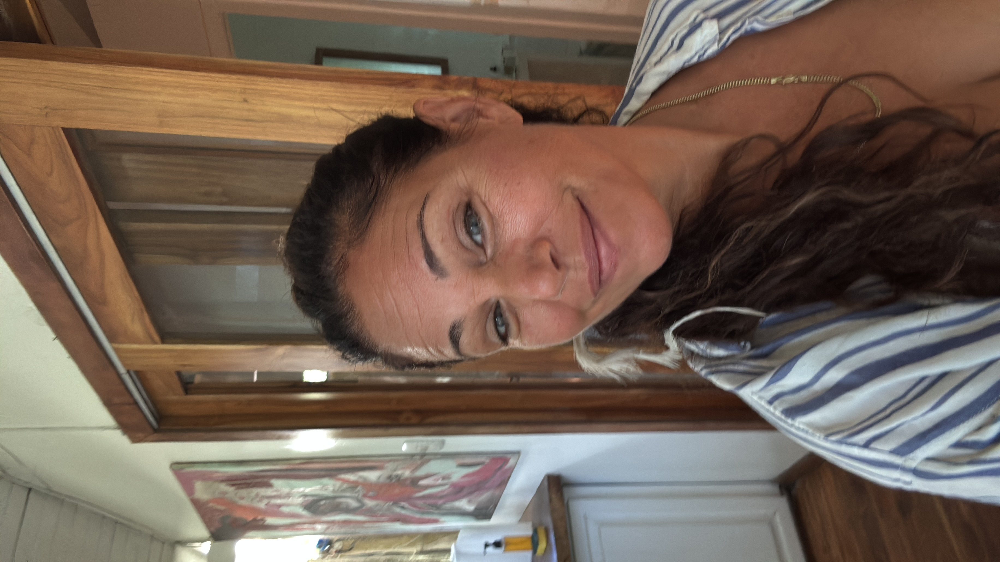

A message
is waiting
for you.
Sometimes we need clarity. Sometimes confirmation. And sometimes, we simply need to know we’re not alone.
“I didn’t choose this. It chose me.”
For years, I felt things I couldn’t explain. Then my father died, and everything changed.
What began as something overwhelming eventually became something I learned to trust.
Today, I use that gift to create a space for clarity, connection, and whatever message may be waiting for you.
— Tara

Experience Sacrada
Wondering what a reading feels like?
Take a moment. This message may be the one you needed today.
Want a little guidance each day?
Follow Sacrada on Instagram for a free daily pull.
Follow Sacrada →The journey
What to expect
Reserve your space
Choose a time that works for you and book in a few clicks.
We connect
Online from anywhere, or in person. You’ll receive everything you need after booking.
Breathe & receive
A breath-guided opening, then an intuitive reading — held in safe, sacred space.
Integrate
Space for your questions, so the clarity stays with you long after we close.
Oracle Card Pull
A personal message, pulled just for you. I’ll choose a card and send you a short recorded reading with whatever comes through.
- One personal oracle card pull
- Short recorded voice or video message
- Delivered within 24–48 hours
- No live call required
1. Purchase your pull · 2. Tell me where to send your message
Sacrada Check-In
Sometimes you don't need a reading.
You just need someone.
A Sacrada Check-In is a private 25-minute space — to talk, be heard, and land somewhere soft. No explanation needed. No agenda needed.
You might be navigating something quietly. Processing a transition. Sitting with grief. Facing a decision alone. Or simply needing a warm, grounded presence to think out loud with.
Tara meets you where you are. Depending on what naturally arises, the session may include conversation, intuitive guidance, an oracle card, grounding, or breathwork — or it may simply be the experience of being deeply listened to.
You don't have to know exactly what you need.
You can just come as you are.
The Sacrada
Session
A private 1:1 session for deeper connection, clarity, and guidance.
Reserve your space- Intuitive mediumship & guidance
- Messages that come through for you
- Time to ask questions, receive, and integrate
Questions
Frequently asked
We begin with a breath-guided opening — a gentle, conscious breathwork practice that settles your nervous system and opens the channel to receive. From there, I connect intuitively: to loved ones who’ve passed, to your guides and angelic energy, and to the clearest version of yourself. Messages, images and impressions come through naturally and I share what I receive. Somatic awareness is woven throughout so your body stays grounded and safe. We close with dedicated time for your questions and gentle integration.
Yes — you’re welcome to hold the intention of connecting with a specific person before and during the session. I’ll open the channel and share what comes through. That said, I work with what presents itself: sometimes the person you hope to reach comes through clearly; sometimes a different guide or energy steps forward with a message that’s needed most. I’ll always share honestly what I receive.
In over four years of doing this work, I have not experienced a session where nothing comes through. That said, I don’t make guarantees — every channel opens differently. What I can promise is that I show up fully, I work the channel with care, and I share everything I receive. If a message feels quiet or gentle rather than dramatic, that is still a message.
Not at all. Nerves are completely normal — this kind of work can feel unfamiliar, even for people who’ve wanted it for a long time. The breathwork opening helps settle that. As for skepticism: you don’t need to believe anything for the session to work. An open mind is enough. What comes through will speak for itself.
Sessions run for 60–75 minutes. Please allow a little buffer afterwards — it’s worth giving yourself time to settle before stepping back into your day.
Yes. Sessions are offered online via a private video call, so you can join from wherever you are in the world. All you need is a quiet, comfortable space where you won’t be disturbed, a reliable internet connection, and a pair of headphones if possible.
“The messages that came through were incredibly accurate, deeply comforting, and brought me a sense of peace and clarity that stayed with me long after our session.
I felt completely safe, supported, and genuinely cared for throughout.
I left feeling lighter, more connected, and with a renewed trust in the guidance available to all of us.”
— MAXINE B.
“A friend introduced me to Tara three years ago, and after our very first session I walked away with a completely new perspective on life.
She’s the rare person who feels like an old friend from the start — someone with genuinely good advice, as well as a gifted medium clearly tapped into something greater than ourselves. I’ve gone to her when I’m lost or stuck, and in good times too, when I want to challenge or confirm an approach or a vision I’m sitting with. Every time, I leave significantly clearer than when I arrived.
Give yourself the gift of a conversation with her.”
— JUSTIN